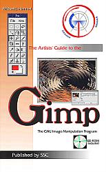

"Linux Gazette...making Linux just a little more fun!"
 |
Set your browser as wide as you'd like now.
I've fixed the Muse to expand to fill the aviailable space!
© 1998 by mjh
|
 |
muse:
-
v; to become absorbed in thought
-
n; [ fr. Any of the nine sister goddesses of learning and the arts
in Greek Mythology ]: a source of inspiration
 elcome
to the Graphics Muse! Why a "muse"? Well, except for the sisters aspect,
the above definitions are pretty much the way I'd describe my own interest
in computer graphics: it keeps me deep in thought and it is a daily source
of inspiration.
[Graphics Mews][WebWonderings][Musings]
[Resources] elcome
to the Graphics Muse! Why a "muse"? Well, except for the sisters aspect,
the above definitions are pretty much the way I'd describe my own interest
in computer graphics: it keeps me deep in thought and it is a daily source
of inspiration.
[Graphics Mews][WebWonderings][Musings]
[Resources]
|
 his column
is dedicated to the use, creation, distribution, and discussion of computer
graphics tools for Linux systems.
his column
is dedicated to the use, creation, distribution, and discussion of computer
graphics tools for Linux systems.
Well,
it's been a couple of months since we last spoke. I've been working
on a major project for the past year and the last 3 months have been exceptionally
busy. But the project is done, or very nearly so (a few minor details
left to handle) - and that project is a book on the Gimp. It's called
The Artists Guide to the Gimp and should hit the shelves
sometime in September. All I can say is, I hope you like it.
Writing a technical book is harder than I thought. My next one is
going to be fictional novel. You don't have to do a CD, tons of images,
or 2nd editions for those.
There were plenty of graphics related news announcements since the last
Muse. Unfortunately, I just didn't keep up with them and they've
expired from my news feed. So what I've got this month is pretty
recent info. I did hang onto a few tidbits from mailing lists I've
been scanning, plus email from a few readers. It's funny - I get email
about really old versions of the Muse every now and then. I think
people are still just finding out about it.
In this month's column I'll be covering ...
-
creating dynamic web pages with msql and CGI.pm
-
Gimp 1.0 - well, just a little.
I'll have more for next month, but I just finished the book with only 3
days to get the Muse done.
 |
Disclaimer: Before I get too far into this
I should note that any of the news items I post in this section are just
that - news. Either I happened to run across them via some mailing list
I was on, via some Usenet newsgroup, or via email from someone. I'm not
necessarily endorsing these products (some of which may be commercial),
I'm just letting you know I'd heard about them in the past month.
 |
|
Xi Graphics releases fully integrated Linux distribution
This isn't really graphics related, but Xi is an X server vendor.
And X server vendors are pretty important to the Linux graphics world.
So, here it is.
Xi Graphics is now providing a commercial Linux distribution which includes
their Accelerated X server and their
maximum/CDE desktop product. Unit price is $214.95 for the Executive
Edition and $364.95 for the Developers Edition.
For more details:
Kyle Fink
Xi Graphics
(303) 298-7478
kyle@xig.com |
 |
Panasonic PalmCam utility
Fredrik Roubert has released a very early version (v0.3) of a driver for
the Panasonic PalmCam, an NV-DC1000
digital camera. According to Robert a couple of the features include
the ability to specify ranges to download and to preview or delete several
images in one session.
For more information, check out his web page at
http://www.df.lth.se/~roubert
/NV-DC1000.html
The package is available from the following sites:
ftp://ftp.df.lth.se/
pub/users/roubert/Linux
ftp://sunsite.unc.edu/
pub/Linux/apps/graphics/capture
|
|
|
Linux / 3-D SIGGRAPH Report
At SIGGRAPH '98 in Orlando, Florida Daryll Strauss and Brian Paul organized
a special interest group (SIG) session to talk
about Linux, 3-D hardware acceleration, and related topics.
Attendence was greater than expected with 100-150 people attending.
A summary of presentations taken by Brian Paul, author of the Mesa package,
can be found at
http://glide.xxedgexx.com/
SIGNotes.html
Blender News
There were a number of updates to Blender, the 3D modelling page from NeoGeo.
Here is a snapshot of annoucements from their News page:
Blender manual (1998-07-10)
All information you need, packed in cool design at paper: the Blender
1.5 manual is scheduled to ship in October. Information about pricing and
pre-ordering will be available in August.
The Unofficial Blender Mailing list (1998-06-16)
Version 1.34 for Linux/FreeBSD available today. (1998-06-04)
Many bugs fixed and included some features: Play (flipbook). Use it
for playback test animations (Hamx) Frame counter during anim playback.
Read the BlenderBeta page for more.
|
Linux IEEE-1394 (FireWire) Subsystem - Status report
Emanuel Pirker is working on the Linux IEEE-1394 (FireWire)
Subsystem for a while now and thought it would be a good idea to give a
small status report.
IEEE-1394 is the name of a high-speed but low-cost serial bus. Apple
has trademarked it as "FireWire". Current implementations reach 200 Mbit/s,
soon we will have 400 and then 800 and so on. FireWire is designed for
consumer multimedia (e. g. connecting a digital video camera to your PC)
and high-speed peripherals (hard disks, CD ROMs, but also scanners, printers).
Since it provides quality of service (guaranteed bandwith and bounded latency)
it can also be used in industrial real-time applications.
Support for Windows (NT) and Rhapsody is coming (some items are already
operational) but Linux users also want to benefit from this technology
- so Emanual started the development as a university project last winter.
He now has a clearly designed subsystem, an Adaptec AIC-5800 driver
and some code to test it. Not all FireWire functions can be used now but
he has reached a point where the API is stable and other people can also
contribute work (e.g. a video camera driver).
So if you are interested in this, just email Emanual - more (wo)manpower
is desperately needed.
Contact addresses:
WWW: http://www.edu.uni-klu.ac.at/
~epirker/ieee1394/
E-Mail: epirker@edu.uni-klu.ac.at
Some late entries:
ImageMagick
4.0.8
Panard Vision -
Portable Real-time 3D Engine for Linux
Mesa 3.0 beta
7
SANE 0.74
FreeWRL 0.14
For more details on these, check out Freshmeat.net. |
|
XVScan 1.80 Scanning software
tummy.com, ltd. is pleased to announce XVScan
Version 1.80, which now includes support for Microtek ScanMaker
E3 and E6 scanners as well as HP SCSI ScanJet scanners. Currently
the Microtek support is available on Linux and Solaris, but our other platforms
will include that support shortly.
XVScan is based on the popular xv
image manipulation software for X Windows and includes a fully licensed
copy of xv. It is source available commercial software.
If you've never used John Bradley's XV image manipulation software,
it's difficult to describe how powerful it is. XV reads and writes files
in a dozen different formats, provides powerful color-map editing, window
capture, color-space conversion, cropping, image manipulation algorithms,
and the list goes on.
XV gives you powerful image and color-map manipulation, support for
over a dozen image formats, as well as the Visual Schnauzer, and an easy
to use graphical interface to view and catalog your scanned images.
Supported images formats include: PNG, GIF, JPEG, progressive JPEG, TIFF
(compressed and uncompressed), PostScript (requires ghostscript), PBM/PGM/PPM
(raw and ascii), X11 Bitmap, XPM (X PixMap), Sun Rasterfile,
With XVScan, you now have the ability to scan directly into XV in a
very cost efficient (and more importantly time efficient) manner.
See our website http://www.tummy.com/xvscan/
for a full list of supported scanners.
What's New in Version 1.80
-
Microtek ScanMaker E3 and E6 support
-
HP ScanJet 5P push button scanning
-
Updated JPEG and TIFF conversions
The Linux version requires working generic SCSI driver. It has been tested
with versions 1.2.7 and higher of the kernel.
The current version of XVScan is 1.80 dated 1998-06-11 based upon XV
version 3.10a dated 12/29/94.
XVScan is $US50 for Linux, HP-UX, FreeBSD and BSD/OS for free ftp delivery.
XVScan is $US80 for Solaris bundled with SGLite SCSI driver. CD-ROM
Media $US20. Contact xvscan@tummy.com to order or order on the web at https://www.tummy.com/ordering/onlineorder.phtml.
Payment accepted via check, Visa/Mastercard/Discover/AMEX cards.
Contact tummy.com, ltd, phone: (970) 223-8215, fax: (408) 490-2728,
URL: <http://www.tummy.com/xvscan/>
email: <xvscan@tummy.com>
S.u.S.E. releases new X servers for Rendition, Cyrix, SiS and 3DLabs
S.u.S.E. is proud to announce the release of a new set of X servers for
several popular graphic chipsets.
To avoid confusion and to clearly state that these servers are part
of XFree86, S.u.S.E. has changed the naming scheme of its servers. Instead
of the XSuSE prefix, they now use XFCom, which is short for XFree86 Compliant.
XFree86 compliance is intended to mean that the sources for these servers
are ALREADY part of the XFree86 development sources and will be released
as part of one of the next XFree86 releases. This is the major difference
to servers with the XBF prefix, which stands for X Binary Free and means
that sources for these servers are only available under NDA and therefore
cannot be included in XFree86.
Following this naming scheme, we have renamed the XSuSE_Elsa_GLoria
server to XFCom_3DLabs and XSuSE_SiS to XFCom_SiS. Additionally, we have
added to new servers that support the very popular Rendition Verite chipsets
and the all-in-one Cyrix MediaGX CPU that includes graphics functionality.
XFCom_Rendition supports the Rendition
Verite V1000, V2100 and V2200 chips. Among the boards supported are
-
miroCRYSTAL VRX
-
Diamond Stealth II S220
-
Hercules Thriller3D
-
Creative Labs 3D Blaster PCI
-
Canopus Total-3D
-
Sierra Screaming 3D
XFCom_Cyrix supports the Cyrix MediaGX
CPU
XFCom_SiS supports
-
SiS 6201
-
SiS 6202
-
SiS 6205
-
SiS 5597
-
SiS 5598
XFCom_3DLabs supports
-
GLINT 500TX + GLINT Delta + IBM RGB 526DB
-
Elsa GLoria L
-
Diamond Fire GL 3000
-
GLINT MX + GLINT Delta + IBM RGB 526DB
-
Permedia + GLINT Delta + IBM RGB 526DB
-
Elsa GLoria S
-
Diamond Fire GL 1000
-
Permedia 2
-
Elsa GLoria Synergy
-
Elsa Winner 2000/Office
-
Diamond Fire GL 1000 PRO
-
Creative Blaster Exxtreme
-
Leadtek WinFast 2300
-
Accelstar Permedia II
All these servers are available as Linux x86 libc5 binaries at
http://www.suse.de/
XSuSE/XSuSE_E.html.
Binaries for other operating systems as well as glibc binaries will
be released, soon. For all questions and support concerning these
servers please do NOT contact XFree86 but send email to x@suse.de
instead.
Did You Know?
A comment on IRTC-L stated:
As I understand, in a cinema, the width is twice as long as the height.
Bernd Sieker, regular contributer to the IRTC list, offered the following
responses:
No, that's not really true. The most commonly used formats are:
|
Name |
Aspect Ratio |
|
Super 35 |
1:1.33 |
|
Academy |
1:1.37 |
|
Wide Screen |
1:1.66 |
|
Wide Screen |
1:1.85 |
|
16:9 |
1:1.77 |
|
Cinemascope |
1:2.35 |
So most common cinama formats are not twice as wide as high, only Cinemascope
is more than twice as wide as it is high. But this format is not as common
as some people think. It requires a special aspherical distortion lens
on both the projector and the camera.
As far as I remember the scenes for Jurassic Park were rendered in 8000x6000
(1:1.33), but often much less is sufficient, like 4000x3000.
Another question from the same list: What are NTSC and PAL?
Again, Bernd Sieker supplies an answer:
These are the two most common colour encoding stamdards for television.
NTSC is used in the United States and, I think, Japan, PAL is used in most
parts of Western Europe (except France. There is a third standard, called
SECAM, which is used in France and parts of Eastern Europe.
PAL and SECAM use 50 fields/s (a field is half a frame), NTSC uses
60 fields/s and fewer lines, so the bandwidth of the signals is almost
equal in all formats (Something on the order of 5 MHz).
For TV the horizontal resolution is not fixed, whereas the number of
lines is; use the following for sqaure pixel aspect ratio:
PAL: 768x576
NTSC: 640x480
Note that the number of lines are fixed and should not be altered, all
systems work with these values.
Q and A
Q: Anyone know how to set up an Wacom Artpad for use with
Gimp, or if this is possible. I think I have to use XInput or something.
A: Juergen Schlag
responded:
A few months ago I tried to set up my Wacom PenPartner with X11.
You need to configure your system like the following:
-
run Linux with a X11 server which supports the Xinput Extension (my old
S3-Board running under the XFree-Server works well, but the XSuSE-Server
for PERMEDIA2-Boards doesn't work).
-
install the Xinput driver for the Artpad (see the docs). I used a patched
driver for the PenPartner.
Muse: What driver and
what docs? Anyone know what he meant by this?
-
edit the Xinput-Section of your /etc/XF86Config to load the driver when
X11 starts (see the man-pages for XF86Config and your X-server)
-
recompile the GTK toolkit with the Xinput-support enabled. see the README
and INSTALL file for the command switch to do this.
-
restart your computer, start X11 and Gimp. if no error message occured
your artpad should work well
Reader Mail
Dan Schmitt wrote:
Michael B. East wrote:
Check out the new home page for sceda, now called sceda II! Let me
know what you think!
It's at www.tls.com/mbeast.
Scott Manley wrote:
'Muse: Thanks for the
pointers guys!
Steve Martin wrote me about some
information in the Linux Graphics mini-Howto:
"If you wish to write shaders in BMRT, you really need The Renderman
Companion book by Steve Upstill which is available from Addison Wesley.
This text also describes the RIB format. Shaders in BMRT are just
text files written in the Renderman Shading Language (described in the
book - it's a subset of C); the shader is run through the BMRT shader compiler
"slc" and then it can be used in your renderings."
I would point out a couple of inaccuracies if I may. First, Mr. Upstill's
book completely ignores the RIB format; he concentrates exclusively on
the procedural binding (i.e. the C-language API). Secondly, regarding
the Renderman Shading Language, Mr. Upstill writes:
"The most obvious characteristic of this shader is a superficial resemblance
to a function in the C programming language."...
"This makes the shading language easier to learn, but one must beware
of assuming the shading language is C."
The text makes it clear that, while there are some syntactic similarities
between the two languages, the RSL is *not* a "subset of C".
'Muse: You are completely
correct. I stand corrected.
Finally, I would recommend that anyone wanting to learn to write shaders
for Renderman read, in addition to the Renderman Companion, Texturing
and Modelling: A Procedural Approach by David S. Ebert et
al. It is a much more thorough and intensive work on procedural texturing
than is RC, and uses examples written almost exclusively in the Renderman
Shading Language.
'Muse: It is indeed.
I've got that text. It's not an easy read, but it's certainly a thorough
coverage of the subject.
Hope this helps. Keep up the good work.
'Muse: It does help.
Thanks for clearing this up. I intend on doing a complete rewrite
of the LGH soon, but I don't know when it will be complete.
Roderick A. Anderson asked
about converting GIF's to interlaced GIF's.
Are there any programs that run on a Linux platform to convert GIFs
to an interlaced format? Free first (of course),then commercial,
then
'Muse: NetPBM, I think.
ImageMagick may also do so. A commercial package is Image Alchemy,
but it's priced for corporate use and not so much for individual use (I
think - it's been awhile since I checked).
hostageware or some variation. I've been too busy to upgrade
my system to RedHat Linux 5.0 (semester is almost over soon) so I haven't
been able to try a recent version of gimp. (The version I have is less
powerful then xpaint.)
'Muse: Boy, that's an old
version. If you have time try the 1.0 version from www.gimp.org.
You'll need to grab the GTK 1.0 libs first - www.gtk.org.
The Gimp can read in non-interlaced GIF's and convert them to interlaced.
It's pretty easy to do.

Building dynamic web pages
Recently I started a complete rewrite of my web site, graphics-muse.org.
This is the 5th time I've done this over the past 5 years although I haven't
had my own domain that long. This rewrite comes from the obvious
need to make the my graphics resources searchable and easier to update.
So, I've had to add a database and learn to create dynamic pages.
The database part is easy - I'm going to use msql.
I've used it for a few simple databases at home and it's quite sufficient
for my relatively simple needs. Dynamic pages are something new,
however. And for this, I need to step into the world of Perl.
I used to pride myself on the number of languages I had taught myself
over the years. In recent times, however, I've found myself falling
behind the curve, having grown comfortable and satisfied with C.
Although I still think C suffices for most projects I realize that I need
to move on to newer, object oriented, languages. I hate C++.
I've done a little work with it and it's just a perversion of C in my eyes.
Java is my long term goal, primarily because I make a living doing graphical
interfaces and Java is the future for people like me. Perl, on the
other hand, is simply the tool of choice for the Web. I didn't want
to learn yet another scripting language, but it's hard to avoid if I'm going
to try to do Web developement. So, Perl it is.
Fortunately, creating dynamic Web pages with Perl turns out to be pretty
simple. A perl module called, conveniently, Msql allows me easy access
to my databases and the CGI.pm module makes generation of HTML a breeze.
Both the msql database and CGI.pm have printed texts available so learning
both is a bit easier than the traditional man-page browsing with which
I've grown up. We'll take a look at how we can use both the Msql
and CGI.pm modules to create a very simple dynamic page.
This discussion does not expect you to understand how to program in
perl, but it would help. We're going to step through the process
without going into huge detail here. Also, when I talk about the
database I'll use lowercase - msql - but when I talk about the perl module
I'll use uppercase - Msql. You should, however, be a little familiar
with how SQL statements look, or at least not be afraid of looking at them.
What we'll use in this example is pretty basic and you should be able to
interpret what's going on from the code and the explanations.
First, what tools do you need for this experiment?
Perl 5.003 patchlevel 7 or higher
msql 1.0.x
CGI.pm 2.38
The Msql module
These just happen to be the versions I installed on the server that hosts
my domain. I don't know what the version of the Msql module is, but
you can find it on a CPAN mirror.
Apparently if you have perl 5.004 you already have CGI.pm (it's part of
the standard distribution since 5.004). If not you'll need to grab
the module from one of the CPAN mirrors. CPAN is the Comprehensive
Perl Archive Network and is where you can find all sorts of modules for
use with Perl. Modules are extensions to perl. The CGI.pm module
allows you to use methods and functions to generate HTML output in a CGI
script. Similarly, the Msql module allows you methods for accessing
an msql database. The current version of the msql database is 2.0.x,
but this seemed to have some problems when I tested simple inserts on a
Solaris box, so I'm working with the more stable 1.0.x version, which happens
to be what's on my server anyway.
Ok, now let's create a simple database. Make sure the msql database
is installed properly (follow the directions with the package - it's pretty
straightforward to build and install). Start the database daemon:
Next you need to create an empty database, which we'll call "muse".
Use the msqladmin command for this:
We can now use the msql monitor to interactively add a table and populate
the table, but let's do this the easy way. We'll create a text file
with the commands and then feed it to the monitor in batch mode.
The text file looks like this (including comments):
# drop existing table. If it doesn't exist,
msql will basically ignore this.
drop table tools
\g
# Create a new table in the database
create table tools (
tooltype int
not null,
# 0: hand tool; 1: power tool
toolname char(255)
not null
# name of the tool
)
\p\g
# Insert a few entries into the table
insert into tools values (0, 'hammer') \g
insert into tools values (0, 'screwdriver') \g
insert into tools values (1, 'table saw') \g
Save this to a file called "tools.msql".
The filename is arbitrary. The "\p" and "\g" tell the monitor to
print the command as its run and to actually run the command, respectively.
Note that the text names are enclosed in single, not double, quotes!
You can feed this to the monitor using the following command:
It's a simple database, but this is a simple example. Now let's build
a CGI script using perl that will display a couple of tables, one of which
will contain the entries from the database. The first thing is to
tell the script to use perl5 and to load the Msql and CGI.pm modules:
The location of your perl5 binary may be different, so check that first.
The stuff after "use CGI" tells perl which functions from CGI to load.
In this case we're loading the standard functions, plus the HTML3 and netscape
extensions. There are multiple methods for specifying these extensions.
You'll need to check the Perl or CGI.pm documentation (see end of this
article) for details on how to use a different syntax.
# print out the HTML HEAD section
print header,
start_html(
-author=>'webmaster@graphics-muse.org',
-title=>'My Little
Tools',
-bgcolor=>'#FFFFFF',
-text=>'#000000'
);
This prints out the <HEAD> section for you. Just modify the author
and title lines to suite your needs. Next comes our connection to
the msql database:
# Open the Msql connections and select the databases
of interest.
my $dbh1 = Msql->connect();
$dbh1->selectdb('muse');
The first line after the comment assigns a database handle to the variable
dbh. The next line use the selectdb() method to access the database
named "muse". Pretty simple, eh? You can specify a remote host
in the connect() method in the first line. You can also specify the
name of the database there. But I think explicitly calling them out
like this makes the code a little easier to maintain for someone who might
come along later and not quite understand what was going on.
Ok, you've opened the connection to the database. Let's grab the
tools table entries.
my $sth = $dbh1->query("SELECT * from tools");
my @rows;
my @result;
while (@result = $sth->fetchrow)
{
push( @rows, td({-align=>'CENTER', -valign=>'CENTER'},
$result[1]) );
}
my $tools_list =
table( {-border=>1, -cellpadding=>'1',
-cellspacing=>'5'},
Tr(@rows)
);
Looks a little confusing, but it's not really. The first line assigns
a handle from the SELECT statement to the variable sth. The handle
is used to access each row of the table that matched the SELECT query.
In this case, the query() method selected all rows from the table "tools".
If we had opened another database (besides the "muse" database) we would
have used a different database handle, such as dbh2, instead. Of
course we would have had to selected that database with the selectdb()
method like we did with dbh1 earlier.
The next two lines just define the variables rows and result to be local.
However, these variables will both be list variables. Lists are special
in perl - you can access all the entries in the list using the @ symbol
as a prefix, or you can access individual elements of the list by prefixing
the variable name with a $ symbol and using an array element number.
We'll see examples of both in a moment.
The next 4 lines are a while() loop that process each row returned from
our SELECT query. The fetchrow() method is used to assign the current
row to the @result list. A row, of course, consists of two entries:
the tooltype and the toolname. The push() line says to append
the following to the @rows list:
td({-align=>'CENTER', -valign=>'CENTER'}, $result[1])
The @rows list is empty to start, so each time through we're adding a new
entry to the list. Each entry is the CGI.pm modules code for specifying
a table element. The stuff between the curly braces are the table
element arguments. After that comes a list of what goes into the
element. In this case, you get the tools name - $result[1].
Remember we assigned the current table row to the @result list, and we're
accessing an element of that list by using the $ prefix and an array index.
The index always starts at 0, so an index of 1 means the second element
of the list. What happens after this while() loop is run is that
you have a list of table elements with all the tools names in them.
We'll be using these when we create a table in just a moment.
Below the while() loop is another local variable, tools_list.
This variable will be used to output a table in our page. The table()
function comes from CGI.pm and is used to generate a table. Note
that neither this nor the td() functions in the while() loop have actually
been output yet. We're just storing these in variables for later
output. Again, the curly braces enclose arguments for the table HTML
tag. After that is another embedded CGI.pm function - Tr().
This function has an uppercase first letter only because perl has its own
"tr" function and there needs to be a distinction between the two.
In most cases, the CGI.pm functions will use lowercase only. The
Tr() function creates a table row. Embedded within this is are all
the table elements we stuffed into the @rows list. Still with me?
Great! All that's left is to output this back to the browser.
# Now print the complete table
print
center(
table(
{-border=>1, -width=>'100%',
-cellpadding=>1, -cellspacing=>5},
Tr(
td({-align=>'CENTER', -valign=>'CENTER'}, $tools_list),
)
)
);
# End of HTML output.
print end_html;
The print() command is from perl. It just prints to standard output,
which is what you want for CGI scripts. The center() function comes
from CGI.pm and will center the following table. The table() function
comes from CGI.pm also. We've already created a table earlier, in
our $tools_list variable. Now we're going to embed that earlier table
inside another table. We define the new tables arguments, followed
by a single table row (Tr()) and a single element in which we add the $tools_list
table.
Save all this to a file called web.pl in your cgi-bin
directory on your web server. Make sure the script has execute permissions.
You can see this little scripts output by accessing www.graphics-muse.org/cgi-bin/web.pl.
It's not much, but it shows how easy it is to integrate a little bit of
database info into a web page. For what it's worth, it only took me
about 2 days to get all this down, mostly by experimenting with examples
in the printed texts. It would have been quicker, but I did
it at work and ducking from coworkers took most of my time.
Speaking of documentation, the texts you want are
-
Offical Guide to Programming with CGI.pm by Lincoln Stein,
published by Wiley Press.
-
Official Guide to MiniSQL 2.0 by Briand Jepson and David
J. Hughes, by Wiley Press.
The msql guide is applicable to the 2.0 release, but I found it useful
for a refresher on using msql. If you need 1.0.x documentation, you
can check out the msql web site.
 |
 |
Gimp 1.0
For those of you who have been
-
living under a rock
-
tied up and held captive by aliens
-
or changing your oil for the past 3 months
I have news for you: Gimp 1.0
has been released. The announcement came back on June 5th.
Since I haven't done a 'Muse column since April perhaps you missed it.
For some reason the trumpets didn't seem to blare as loud as I expected
they might when the announcement hit the mailing lists and comp.os.linux.announce.
I guess I expected more fanfare. Maybe there was and I missed it.
I was changing my oil for a while back then, too. Or maybe that was
the month I was with the aliens. It's been a long summer.
As I mentioned at the top of this column (you know, the part you probably
don't read each month), I've spent the last year working on a book on the
Gimp. SSC, the publishers of the
Linux Journal and the host of
the Linux Gazette, had contacted
me in June of 1997 about the possibility of doing the book. I thought
it was a great idea, so I jumped into it. The hard part has been
trying to keep the work up to date. Much of the writing had to wait
till there was some light at the end of the 1.0 development tunnel.
Not suprisingly, the past 3 months I've been buried in updates and last
minute details. This has been the longest last minue of my life.
But I'm fairly happy about the book. It will be printed in 4-color
on glossy paper and there are lots of images and examples. There
is also a CD which will include all the images from the book, plus lots
of other good stuff. There are some things I didn't get in because
there just wasn't any time left. They'll have to wait for the next
edition or for articles in the Linux Journal. Or maybe in the 'Muse.
Anyway, one year is plenty for the first edition.
Gimp 1.0 source actually comes in
three packages: the core distribution, the extras package, and the
unstable package. The core and extras package build and install fairly
easy. The unstable package includes a number of very handy plug-ins
but you have to understand how to build them a little more than the core
and extras packages.
Some of the more interesting features of the 1.0 release include a rather
good Print plug-in that can work with a number of HP and Epson printers
directly and also supports Postscript output. So you can print directly
to a postscript capable printer or run the output through Ghostscript.
-Top of next column-
|
|
More Musings...
No more musing this month. |
|
| Another great Plug-in is the GFig plug-in, which
allows you some limited drawing capabilities. You can draw circles,
curves, boxes and other shapes, repositions them, render them on separate
layers using any brush shape and color. The interface is a bit clunky,
but it's still an improvement on the default drawing tools.
Other recent improvements over older development releases include:
-
runtime configuration via the Preferences dialog
-
a Netscape interface to access online resources
-
a better menu organization
-
frequently used layer functions accessible via buttons now
-
lots of Script-Fu scripts
The Gimp has gotten quite a bit of press recently, including some blurbs
in the online version of Publish magazine and on NPR (National Public Radio).
Check Zach's Gimp News
site for more information on these.
There are still a few things that need work, not the least of which
is support for more color models. But this has been discussed at
length on the developers list and a few people appear to be working on
it, at least to some extent, for the 1.2 release. The Gimp will have
a numbering scheme like the Linux kernel, where even numbers are public
releases and odd numbers are developers releases. Currently, the
1.0.4 version is the latest public release. There is a 1.1
I intend to focus more of my energies towards the Gimp from now on.
The 'Muse columns future depends on some discussions I'm having with SSC
about another project, but for now it's just discussion. In any case,
after all this time, I finally plan on working on some plug-ins and scripts.
Since 1.0 is out, I can't whine about not having a stable version anymore.
I'll be hanging out on the Gimp-User mailing list trying to help out there.
With 1.0 out, it's time for the user community to show what can be done
with the tools.
Besides, maybe we have another Gimp-based Diane
Fenster out there.
|
|
 |
The following links are just starting points for finding more information
about computer graphics and multimedia in general for Linux systems. If
you have some application specific information for me, I'll add them to
my other pages or you can contact the maintainer of some other web site.
I'll consider adding other general references here, but application or
site specific information needs to go into one of the following general
references and not listed here.
Future Directions
Next month:
As usual, I'm not sure exactly what will be covered next month.
My next major project is a rewrite of my graphics-muse.org web site so
you can expect I'll probably have something for Web Wonderings. POV-Ray
3.0 is out in beta, I hear. Anyway, we'll see which way the winds
blow by the end of August.
Let me know what you'd like
to hear about!
Previous ``Graphics Muse'' Columns
Graphics Muse #1, November 1996
Graphics Muse #2, December 1996
Graphics Muse #3, January 1997
Graphics Muse #4, February 1997
Graphics Muse #5, March 1997
Graphics Muse #6, April 1997
Graphics Muse #7, May 1997
Graphics Muse #8, June 1997
Graphics Muse #9, July 1997
Graphics Muse #10, August 1997
Graphics Muse #11, October 1997
Graphics Muse #12, December 1997
Graphics Muse #13, February 1998
Graphics Muse #14, March 1998
Graphics Muse #15, April 1998
Copyright © 1998, Michael J. Hammel
Published in Issue 31 of Linux Gazette, August 1998
![[ TABLE OF CONTENTS ]](../gx/indexnew.gif)
![[ FRONT PAGE ]](../gx/homenew.gif)